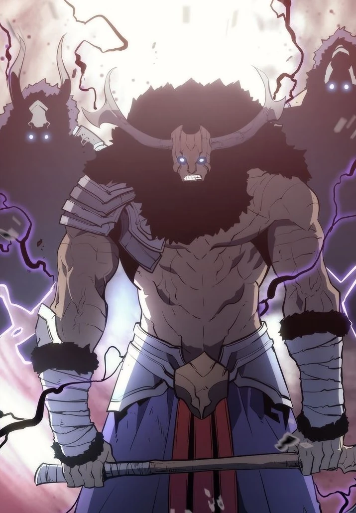

Giant
Affiliation: Monarchs
Class: S Rank
Parents: Unknown
Biography
The Giant is a towering monster known for its immense strength and destructive capabilities. It serves as a loyal subordinate to the Monarchs, wreaking havoc wherever it goes.
Abilities
-
🔸 Colossal Strength
The Giant possesses unparalleled physical strength, capable of leveling entire cities with a single blow.
-
🔸 Earth Shatter
With a stomp of its massive feet, the Giant can create devastating earthquakes, disorienting and damaging its enemies.
-
🔸 Regeneration
The Giant has the ability to rapidly heal from injuries, making it a nearly unstoppable force in battle.